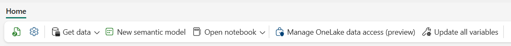
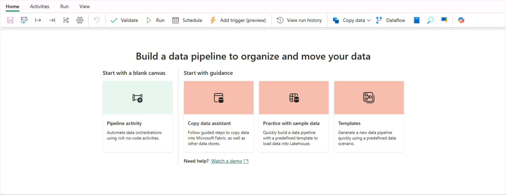

05 ~ Create and use Dataflows (Gen2) in Microsoft Fabric
For this lab you need to navigate to QA Platform and login using the credentials provided
It is important that you use an incognito/private mode browser tab and not your work or personal Microsoft login
Step 1: Signing in to Microsoft Fabric
In this lab, you will sign in to Microsoft Fabric using the email and password from the QA Platform.
-
Using an incognito/private mode browser tab navigate to the Fabric portal at: https://fabric.microsoft.com
-
Follow the prompts, and sign in with the user credentials from the QA Platform:
- Password
-
After signing in, you will be redirected to the Fabric home page:

Step 2: Create a workspace
Before working with data in Fabric, you need to create a workspace with the Fabric trial enabled.
-
Navigate to the Microsoft Fabric home page in an incognito/private mode browser tab browser, and sign in with the Fabric credentials from the QA Platform.
-
In the menu bar on the left, select Workspaces (the icon looks similar to 🗇).
-
Create a New workspace:
- Give it a name of your choice. For example:
fab_workspace - Leave all other options as the default values
- Click Apply
- Give it a name of your choice. For example:
-
When your new workspace opens, it should be empty.

Step 3: Create a lakehouse
Now that you have a workspace, it's time to create a data lakehouse into which you'll ingest data.
-
On the menu bar on the left, select Create. In the New page, under the Data Engineering section, select Lakehouse.
- Give it a name of your choice. For example:
fab_lakehouse
If the Create option is not pinned to the sidebar, you need to select the ellipsis (…) option first.
After a minute or so, a new empty lakehouse will be created.

- Give it a name of your choice. For example:
Step 4: Create a Dataflow (Gen2) to ingest data
Now that you have a lakehouse, you need to ingest some data into it. One way to do this is to define a dataflow that encapsulates an extract, transform, and load (ETL) process.
-
In the home page for your lakehouse, select Get data > New Dataflow Gen2

Click Create, and after a few seconds, the Power Query editor for your new dataflow opens as shown here:

-
Select Import from a Text/CSV file, and create a new data source with the following settings:
- Link to file: Selected
- File path or URL: https://raw.githubusercontent.com/MicrosoftLearning/dp-data/main/orders.csv
- Connection: Create new connection
- Connection Name: default value ~ or orders.csv if name already exists
- data gateway: (none)
- Authentication kind: Anonymous
- Privacy Level: None
-
Select Next to preview the file data, and then Create the data source.
The Power Query editor shows the data source and an initial set of query steps to format the data, as shown here:

Step 5: Transform the data using Power Query
You can now transform the data. In this lab we will add a column using a custom formula.
-
On the toolbar ribbon, select the Add column tab. Then select Custom column and create a new column.
-
Do the following:
- Set the New column name to: MonthNo
- Set the Data type to: Whole number
- Add this Custom column formula:
Date.Month([OrderDate])

-
Click OK to create the column. Notice how the step to add the custom column is added to the query.
The resulting column is displayed in the data pane:

Info
- In the Query Settings pane on the right side, notice the Applied Steps include each transformation step.
- At the bottom, you can also toggle the Diagram view button to turn on the Visual Diagram of the steps.
Info
Steps can be moved up or down, edited by selecting the gear icon, and you can select each step to see the transformations apply in the preview pane.
-
Check and confirm that the data type for the OrderDate column is set to Date and the data type for the newly created column MonthNo is set to Whole Number.

Step 6: Add data destination for Dataflow
The next step is to define a destination for your transformed data. This will be the lakehouse you created in Step 3.
-
On the toolbar ribbon, select the Home tab. Then in the Add data destination drop-down menu, select Lakehouse.
Note
- If this option is grayed out, you may already have a data destination set.
- Check the data destination at the bottom of the Query settings pane on the right side of the Power Query editor.
- If a default destination is already set, you can remove it and add a new one.
-
In the Connect to data destination dialog box, use the existing connection credentials:

-
Select Next and in the list of available workspaces, find your workspace and select the lakehouse you created in it at the start of this exercise. Then specify a new table named orders:

-
Select Next and on the Choose destination settings page:
- Disable the Use automatic settings option, select Append, and then Save settings.

-
On the Menu bar, open View and select Diagram view. Notice the Lakehouse destination is indicated as an icon in the query in the Power Query editor.

-
On the toolbar ribbon, select the Home tab. Then select Save & run and wait for the Dataflow 1 dataflow to be created in your workspace.
Step 7: Add a dataflow to a pipeline
You can include a dataflow as an activity in a pipeline. Pipelines are used to orchestrate data ingestion and processing activities, enabling you to combine dataflows with other kinds of operation in a single, scheduled process. Pipelines can be created in a few different experiences, including Data Factory experience.
-
From your Fabric-enabled workspace, select + New item > Data pipeline
- When prompted, create a new pipeline named: Load data
Click Create, and the pipeline editor will open:

If the Copy Data wizard opens automatically, you can just close it.
-
Select Pipeline activity, and add a Dataflow activity to the pipeline.
-
With the new Dataflow1 activity selected, on the Settings tab, in the Dataflow drop-down list, select Dataflow 1 (the data flow you created previously)

-
On the Home tab, save the pipeline using the (Save) icon.
-
Use the Run button to run the pipeline, and wait for it to complete. It may take a few minutes.

-
In the menu bar on the left edge, select your lakehouse.
-
In the ... menu for Tables, select refresh.
Then expand Tables and select the orders table, which has been created by your dataflow.

Tip for Power Bi Desktop users:
- In Power BI Desktop, you can connect directly to the data transformations done with your dataflow by using the Power BI dataflows (Legacy) connector.
- You can also make additional transformations, publish as a new dataset, and distribute with intended audience for specialized datasets.

Clean up resources
Once you've finished exploring dataflows in Microsoft Fabric, you should delete the workspace you created for this exercise.
-
Navigate to Microsoft Fabric in your browser.
-
In the bar on the left, select the icon for your workspace to view all of the items it contains.
-
Select Workspace settings and in the General section, scroll down and select Remove this workspace.
-
Select Delete to delete the workspace.
Source: https://microsoftlearning.github.io/mslearn-fabric/Instructions/Labs/05-dataflows-gen2.html